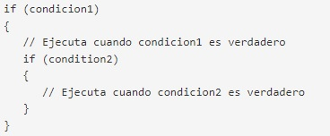
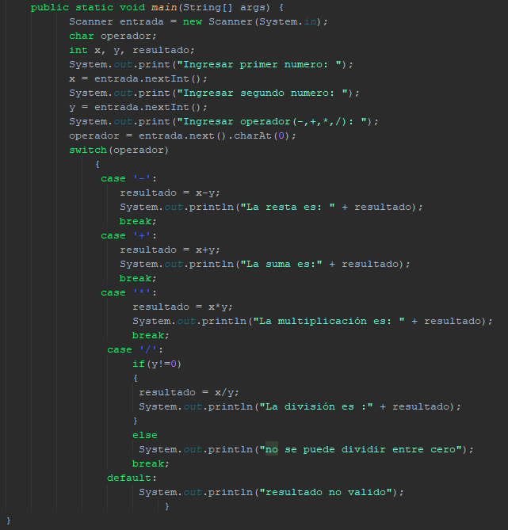

CURSO JAVA

Sentencias condicionales (if, else, else if, switch)
En la presente leccion conoceremos las sentencias condicionales en Java: los tipos que hay, sus estructuras, funcionamiento y algunos ejemplos para el uso correcto y optimo de estas estructuras.
La toma de decisiones en la programación es similar a la toma de decisiones en la vida real. En la programación también enfrentamos algunas situaciones en las que queremos que se ejecute cierto bloque de código cuando se cumple alguna condición.Los lenguajes de programacion utilizan instrucciones de control para controlar el flujo de ejecución de sus programas en función de ciertas condiciones. Estos se utilizan para hacer que el flujo de ejecución avance y se ramifique en función de los cambios en el estado de un programa.
Las palabras claves o palabras reservadas de esta leccion son las siguientes:
⚫switch
Estas palabras reservadas son las que conforman las principales sentencias condicionales, que, haciendo uso de las condiciones booleanas vistas en clases anteriores podran darnos caminos diferentes en la ejecucion de nuestro programa.
Sentencia if
La sentencia if es la declaración de toma de decisiones más simple. Se usa para decidir si una determinada declaración o bloque de enunciados se ejecutará o no; es decir, si una determinada condición es verdadera (true), se ejecutará un bloque de enunciado y, de ser falsa (false), no.

Como podemos observar la sentencia if ejecutara las lineas de codigo encerradas dentro de sus llaves cuando la sentencia sea cierta, pero, ¿que debemos hacer si queremos que se ejecuten lineas de codigo cuando la condicion sea falsa (false)?. En ese caso, la respuesta es la sentencia else
else y else if
La Estructura else es un complemento del if, en el cual se añade el codigo que nosotros queremos que se ejecute si la condicion del if es falsa. la Estructura del if junto con el else es la siguiente:

Como podemos observar, la sentencia completa de if con else nos permite la eleccion de 2 caminos de ejecucion, dependiendo la condicion inicial.
Si deseamos o necesitamos la eleccion entre 3 o mas caminos dentro de la ejecucion del programa, podemos hacer uso de las escaleras if o como comunmente se llama, varios else if, cuya estructura es la siguiente:
Como podemos ver en el codigo anterior, si la primera condicion del primer if no se cumple (false), entonces el else nos mandara con otro if para ver su condicion, en caso de que esta sea falsa tambien seguira con el siguiente if y asi sucesivamente, hasta que encuentre una condicion cierta o llegue al ultimo else, donde habra un codigo en caso de que todas las condiciones no se cumplan
if anidados
La sentencia if nos proporciona gran versatibilidad de caminos dentro de la ejecucion de un programa, dependiendo como organicemos los if o else dentro de nuestro codigo. Uno de los usos mas comunes de los if son los if anidados, donde basicamente añadimos un if dentro de otro para optar a otros caminos o filtros si una condicion primera es cierta.

Su estructura principal nos indica que solo si la primera condicion es cierta se podra hacer una segunda comparacion con el segundo if. Los if pueden anidarse de infinitas maneras y sin resctricciones, siempre y cuando se haga con la estructura correcta
Ejemplo del uso de if y else
Ejemplo N°1:
Solicitar al usuario que ingrese dos números y mostrar cuál de los dos es menor. Considerar el caso en que ambos números son iguales. La solucion a considerar para este ejercicio es la siguiente:
Como vemos en la imagen de la solucion, despues de ingresar por teclado los numeros se procede a compararlos para saber si hay uno mayor al otro o si son iguales: primero comparamos si el numero 1 es mayor al numero 2, si es asi imprimimos un texto con el numero mayor; en dado caso la condicion no se cumpla, pues se va por el else a otro if que comprueba si el numero 2 es mayor al numero 1, si es asi pues se imprime otro texto dando la respuesta. En dado caso ninguna condicion se cumpla, se asume que los 2 numeros son iguales y se imprime un texto haciendo alusion a eso.
Salida del ejercicio:
sentencia Switch
La sentencia switch es una estructura condicional para multiples vias de seleccion, esto nos permite poder tener varios caminos en el codigo sin la necesidad de tener muchos if's anidados. Su estructura principal es la siguiente:
La diferencia principal de switch respecto a if es la manera de evaluar las opciones. Switch necesita expresion(puede ser una variable o un resultado de una operacion) esta operacion se evaluara en cada case, si la expresion cumple con el case se ejecutara el codigo despues de los 2 puntos y terminara con el break, luego seguira con el siguiente case y asi sucesivamente. si en un dado caso no encuentra ningun caso que cumpla la condicion, se ejecutara el codigo de default, que es el codigo en caso de que ninguna sentencia case se cumpla. Cabe mencionar que el unico caso donde switch funciona es en comparaciones directas (de igualdad: ==) ya que switch no admite rangos en los case.
Ejemplo del uso de switch
Ejemplo N°2
Se necesita un programa que pida 2 numeros enteros y un signo (+,-,*,/) y realize dicha operacion sobre esos numeros, considere que no se puede realizar la division sobre 0. La solucion a considerar es la siguiente:

En el codigo siguiente se utiliza como expresion de comparacion la variable operador, que es la que guardara el signo de operacion que se necesita, despues la funcion switch va evaluando 1 a 1 cada caso con respecto a la variable operacion, en un dado caso el signo del case sea igual al de la variable operacion, se ejecutara el codigo dentro del case, esto funciona para todos los casos, con la diferencia que el caso de la division evalua primero con un if si el numero 2 (el denominador) sea diferente de 0, ya que la division entre 0 no se permite, en caso de que el numero 2 sea 0, se imprimira un mensaje que indique que no se puede hacer esa operacion. por ultimo la opcion default tiene un impresion en caso de que la operacion no coincida con ningun signo del switch.
Te recomiendo, a fines de un mejor aprendizaje, que realices el ejercicio y compruebes las salidas con cada operacion.
Contenido multimedia